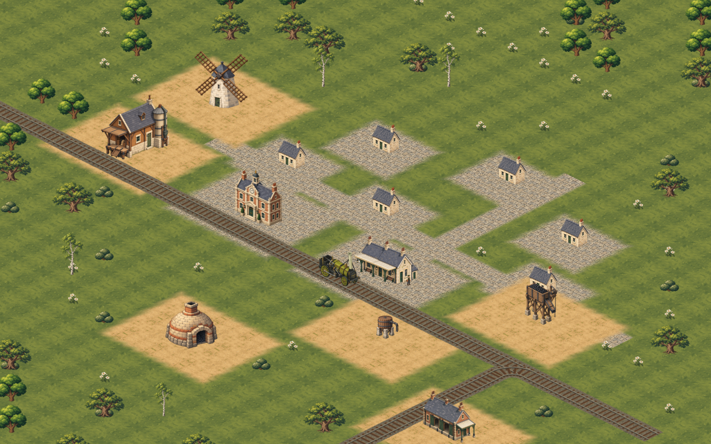
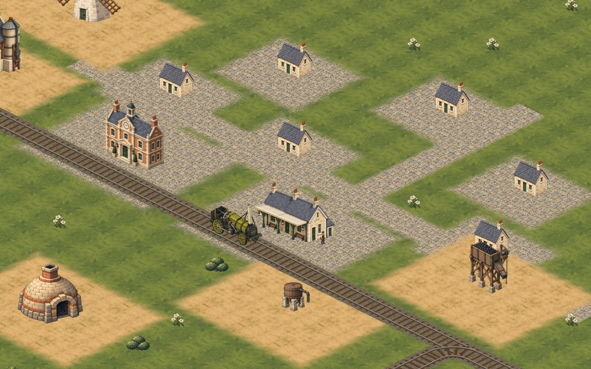
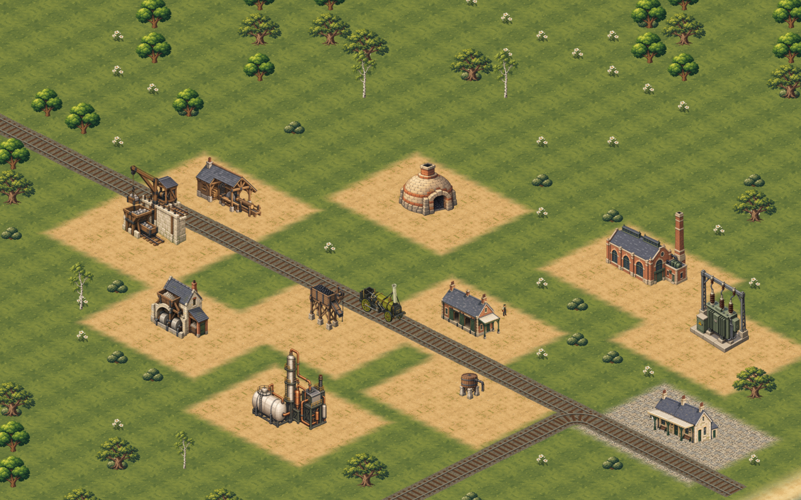
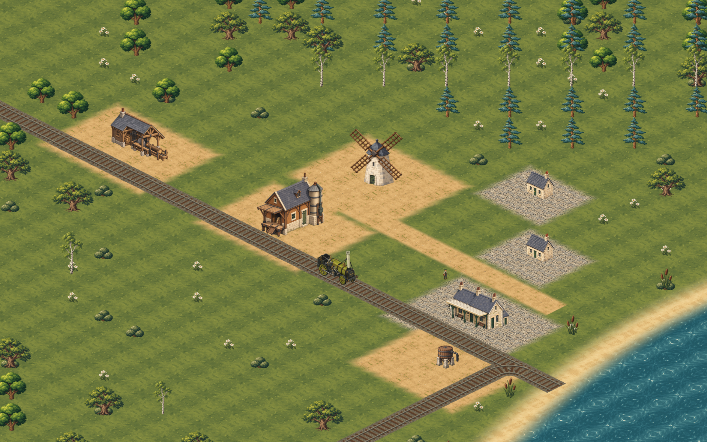
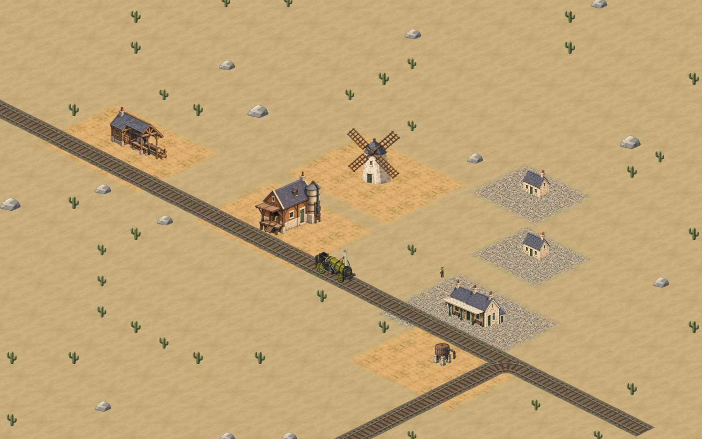
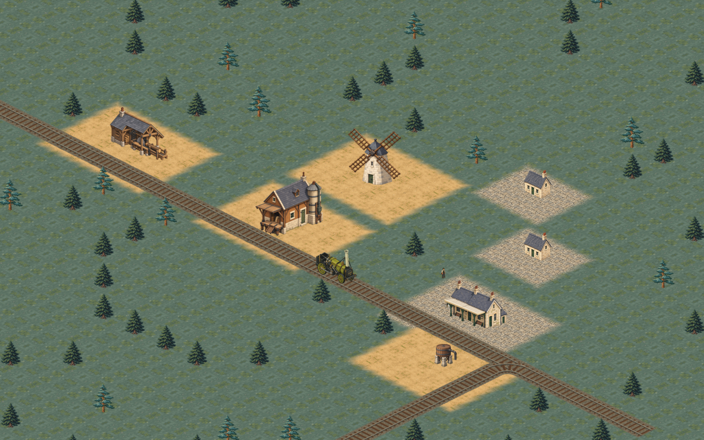
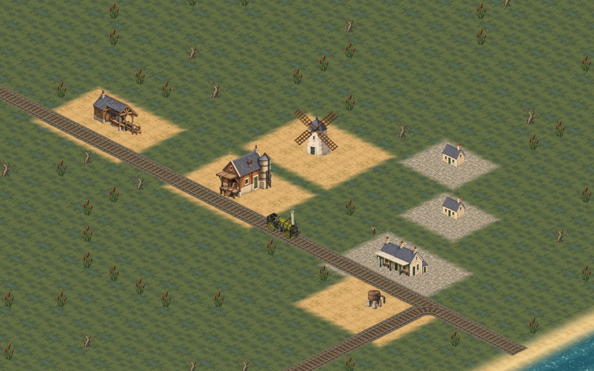

A consistent illustrated world
Seven actual game-rendered stills · 1920 × 1200 · Approved source-art palette and materials.







Isolated art-preview scenes. Ground and building-scale treatments are preview overrides; this is not a completed production asset rollout. Scope and reproduction notes.